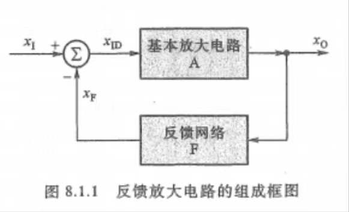

第八章 反馈放大电路
第一节 反馈的基本概念与分类
反馈：将电路输出电量（电压或电流）的一部分或全部通过反馈网络，用一定的方式送回到输入回路，以影响输入、输出电量的过程。
反馈放大电路：引入反馈的放大电路

- \(x_I\)：输入信号
- \(x_O\)：输出信号
- \(x_F\)：反馈信号
- \(x_{ID}\)：净输入信号
负反馈放大电路中\(x_{ID} = x_I - x_F\)
- 基本放大电路的增益：\(A = \frac{x_O}{x_{ID}}\)
- 反馈系数（反向传输系数）：\(F = \frac{x_F}{x_O}\)
- 闭环：反馈网络存在，能形成反馈。
- 开环：反馈网络不存在，不能形成反馈。
反馈的分类：
- 正反馈：
反馈信号引回输入回路与原输入信号共同作用后，使净输入信号量比没有引入反馈时有所增加。
- 负反馈：
反馈信号引回输入回路与原输入信号共同作用后，使净输入信号量比没有引入反馈时有所减少。
放大电路中一般引入负反馈。
判断方法：
- 直流反馈：存在于放大电路直流通路中的反馈。
- 交流反馈：存在于放大电路交流通路中的反馈。
- 电压并联负反馈：得到电流-电压转换电路
- 电压串联负反馈：减小输入电流，增大带负载能力
- 电流并联负反馈：增大输入电流、稳定输出电流（电流控制）
- 电流串联负反馈：增大输入电压，稳定电流。得到电压电流-负反馈